|
| "crowd" |
| |
| 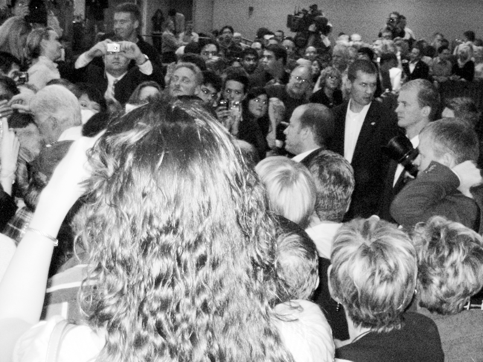 | 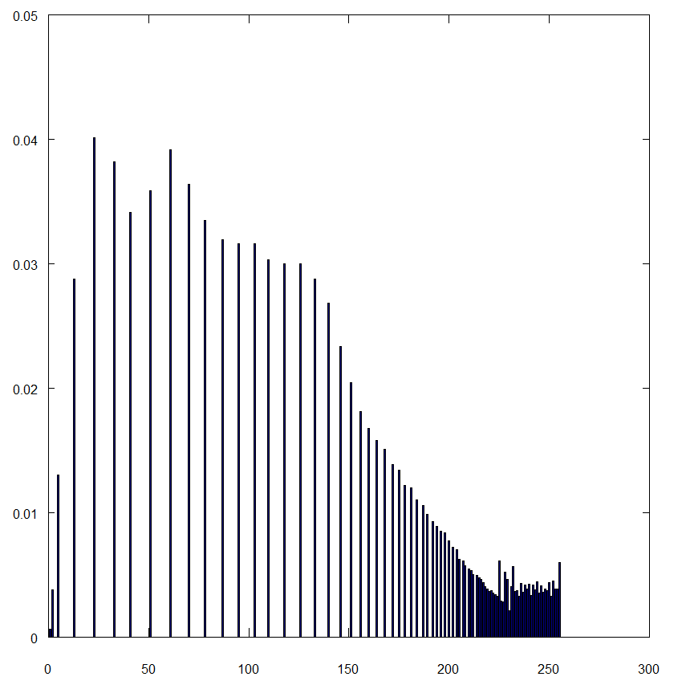 |
|
In this image, the histogram of the original image shows a larg clustering of images on the far left - which corresponds to the overall low intensity of the image.
After histogram equalization, the histogram density appears to have spread out over the intensity spectrum.
It also seems to have space out the different intensity values represented: in the original histogram the bars are close enough to appear contiguous, while in the equalized histogram, the bars are not only more evenly distributed, but also more spaced.
The effect on the image is very obvious - with a more diversified spread of intensities, the image appears much more bright as compared to the original. The equalizatino hasn't just brightened pixels, it has give a more even spread of intensities, so that the image has more brightness and contrast.
|
|
| "university" |
| 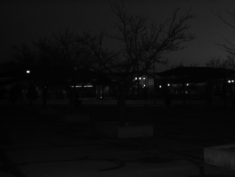 | 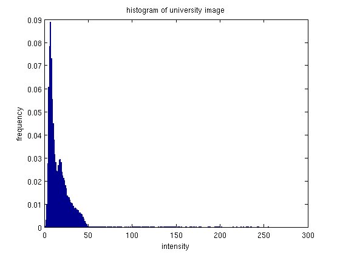 |
 | 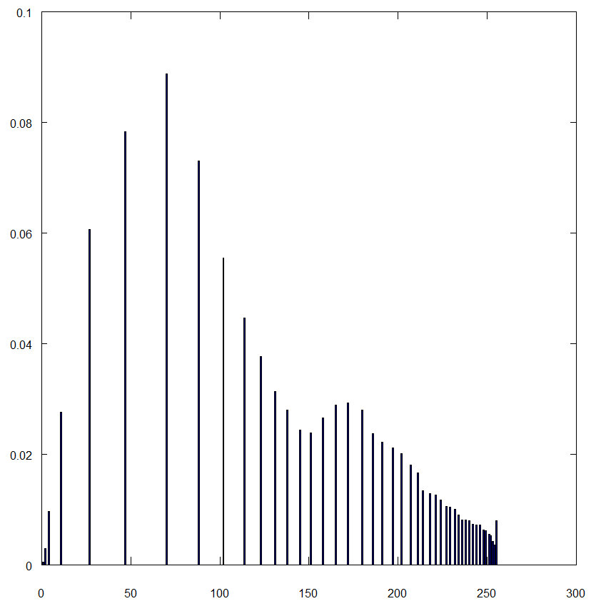 |
|
This image is similar to the first, in that the original histogram has a dense clustering of intensities on the low intensity end. Again after equalization these intensities spread out. It's also interesting to note that there is actually a more dense clustering of pixels on the opposite (high intensity) end of the intensity spectrum than, and a much sparser clustering of intensity on low intensity end.
The image after equalization again looks brighter as compared with the original. With the better spread of intensity values, one can see more details that were previously blended in the low intensity lump. One detail that is hard to see without zooming in on the images, is that while teh equalized image looks good overall, the image appears more grainy. However this detail could probably be taken care of with some amount of gaussian smoothing - as evidenced by it not being noticeable except when zoomed in.
|
|
| "chang" |
| 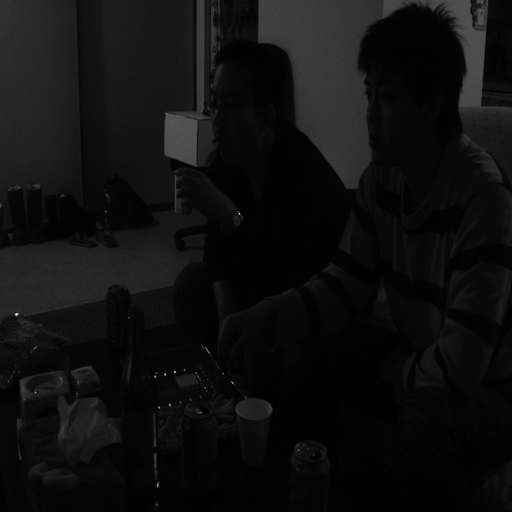 | 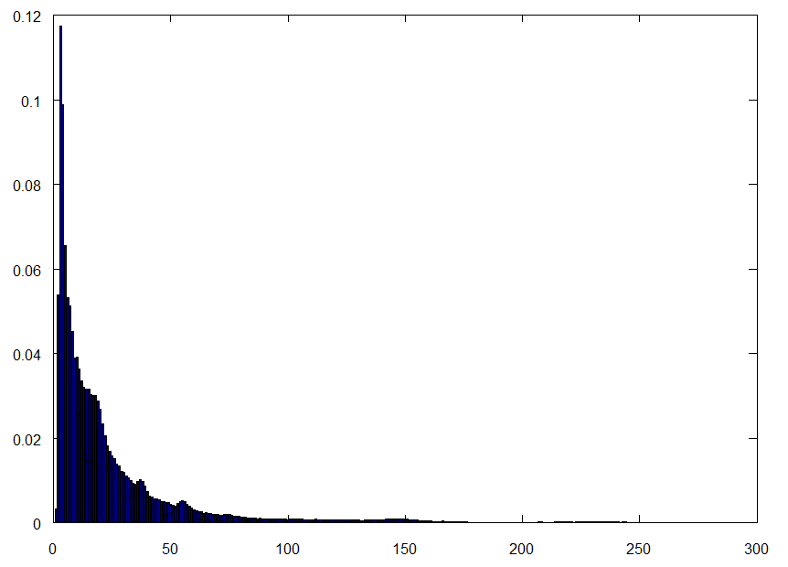 |
| 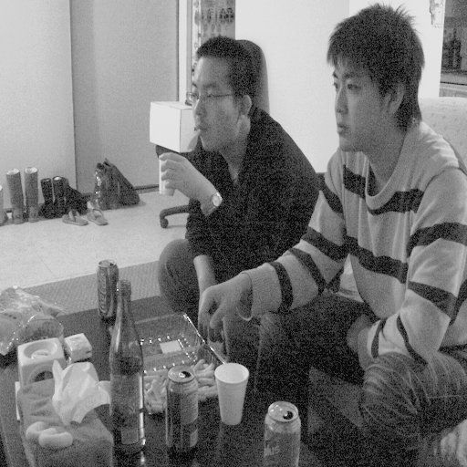 | 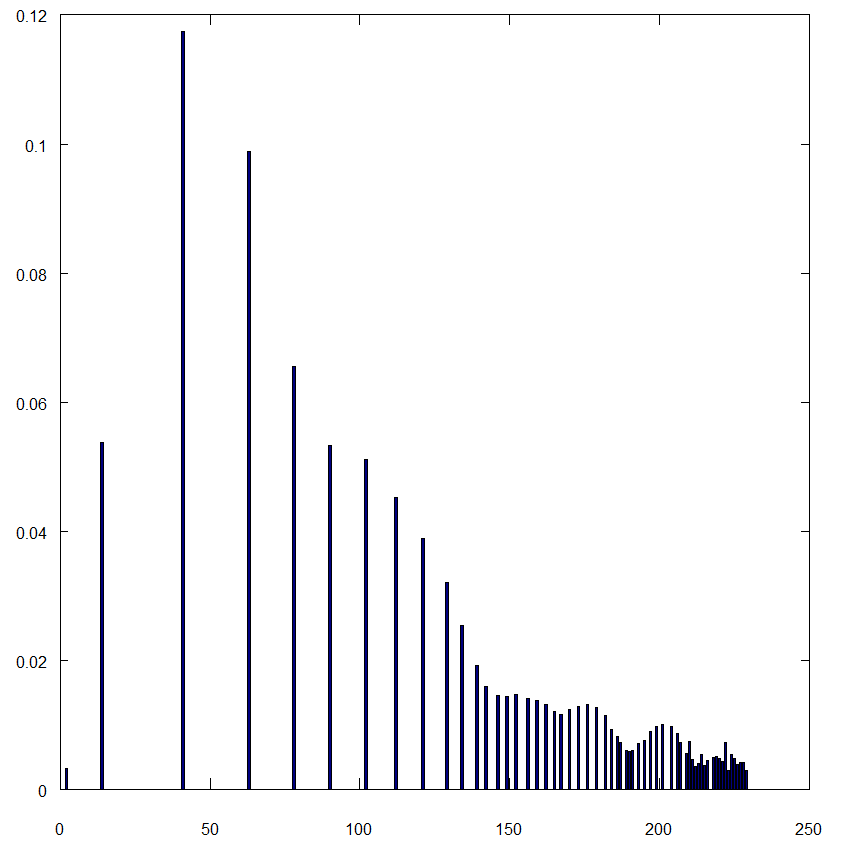 |
|
This image was also original quite dark, and consequently the original histogram is very clumped at the low-intensity end. After equalization the histogram mass has been spread out across the intensity spectrum. Again, there appears to be some clumping of the intensities on the high intensity end.
The equalized image has the expected result, it appears more clear and details are more discernible than the original.
The better spread of intensities allows for more contrast and brightness variety than in the original image.
|
|
| "portal" |
| 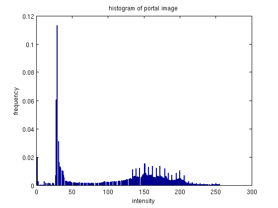 |
| 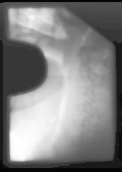 | 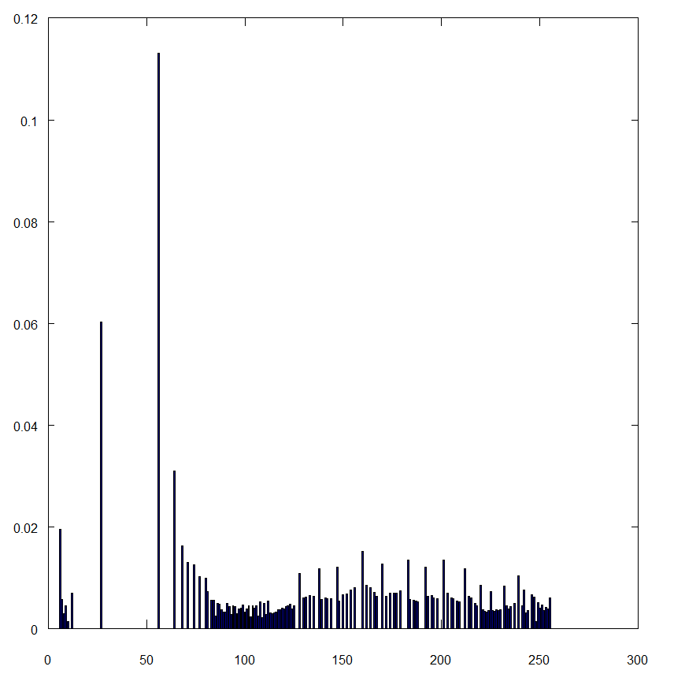 |
|
This image didn't have a huge change in the histogram. The original histogram was already fairly spread out, the equalized histogram has a little more distance between some of the bins.
The image also did not change a lot, but did change some. Specifically, some of the detail in the middle of the lighter area is now visible, and you can almost make out some sor tof bone structure.
The equalization was not quite as effective for this image, because the histgoram was already fairly well distributed.
|
|
| "napali" |
 | |
| 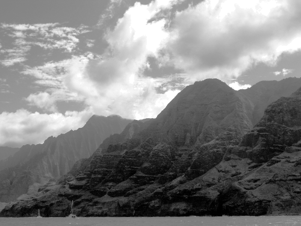 | 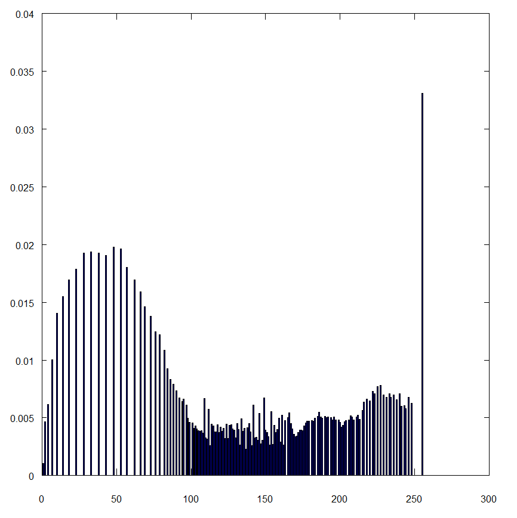 |
|
This is an interesting picture to see how histogram equalization works, because the image includes a large group of really bright pixels (clouds), and a large group of lower/mid-intensity pixels (mountains). The equalization is able to break up and spread out the intensities a little more.
The image has noticeable changes - the darkened moutains appear to have a more lustery surface, although the effect almost looks like snow.
While the equalization had some effect, it appears that because of this specific scene the effects are not preferable.. the original image is probably better. Thist is one of the pictures we will be using the blending histogram equalization approach on below.
|
|
| "arch" |
 | 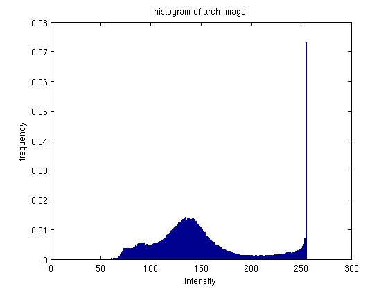 |
| 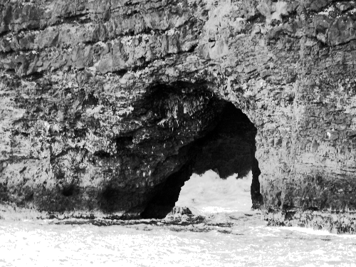 |  |
|
Again, this image contains a large group high-intensity pixels (wave crests, and reflection off the water) and a large group of mid to low-intensity pixels (rock making up the arch).
The histogram again spreads out the histogram by incorporating more dark intensity pixels
It also seems to have groups and spaced the pixels - resulting in a sort of smoothing over of a small bulge in the middle of the histogram.
The effect of the equalization on the image is not very desirable.
While the details in the rock crackers are more observable, this isn't very good in a visual sense.
The waves appear more washed out as well.
The equalization didn't have a very good effect because the pixels were already pretty well spaced, and probably also due to the pixels having two large groups - bright and mid-range... making it difficult to evenly spread them.
|
|
| "santiago" |
| |
| 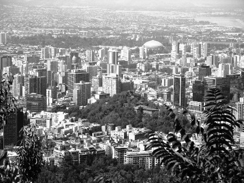 | 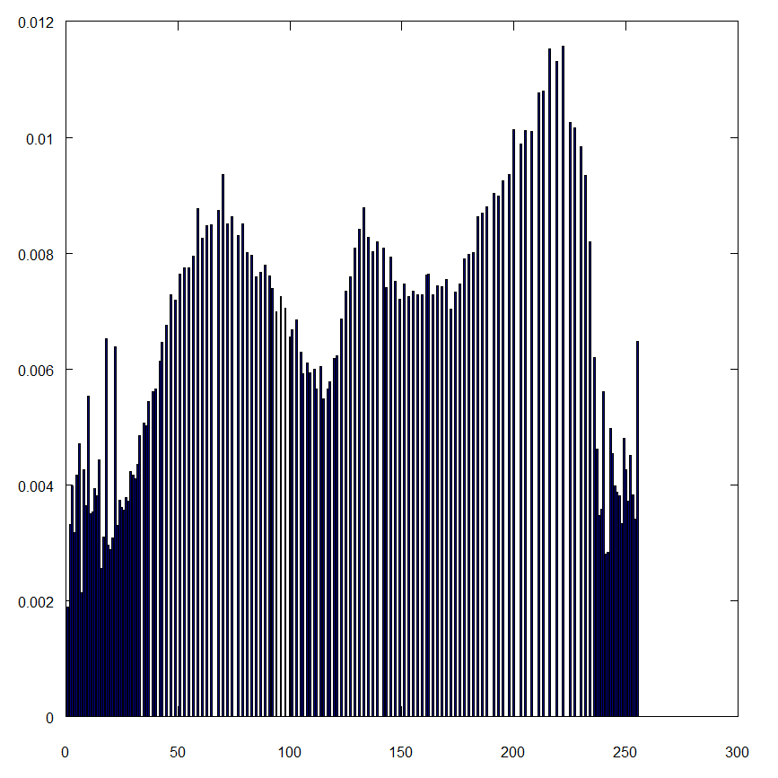 |
|
While this histogram has a good range of values, there is also some clumping to the center of the histogram.
The majority of the mass of the histogram is in the center.
Equalization spreads that mass out more evenly across the intensity spectrum, giving a more balanced look to the histogram.
The effect of this on the image actually very good. While the original seems a little over-exposed, giving an almost hazy feel to the city-scape, the equalized image looks more sharp and crisp.
The buildings in the image also appear more bright, and the vegetation up close looks more dark.
In the original both were a little more mid-intensity which made the image dull.
|